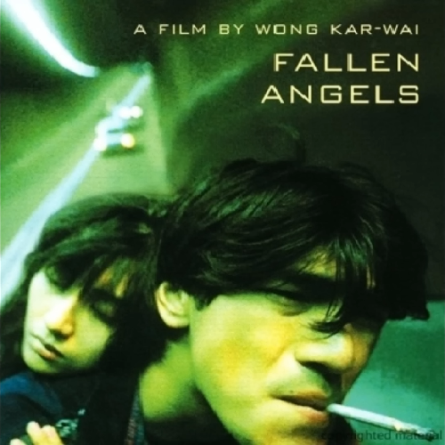

Fallen Angels (墮落天使)
10 // downpour
2025.04.12

I don't really watch movies.
I have severe ADHD and typically prefer to spend leisure time on my preferred medium for storytelling, Video Games, because the interactivity is much easier for me to handle (not because the stories are better: they vary wildly in quality, much like other mediums). As the inquisitive reader may find out, this is my first review, and my account was created today. Let me explain to you why that is.
Technically, I am a trained artist. My best medium is the written word, as I have a degree in creative writing from a top program. I'm also very experienced with music, and consider myself pretty well educated on that medium as well. I use this background to give more meaning to one belief I have about art: most good art can take the breath away from a true artistic soul, regardless of medium and circumstance.
I'll be honest, I was squirming in my seat for the entire second half of the movie, despite the fact that 99 minutes (1h39m) is quite short for a film by today's standards. I only managed to stay seated because I was so enraptured with the spirit of what the film is trying to convey. This film is so many things; a time capsule from 1995 British Hong Kong, a gritty street drama, whirlwind passion, lessons about all kinds of love, loneliness, youth, and the human experience. It's crass, violent, and sexual, but somehow manages to still be so beautiful that at the end you're just staring at the screen wondering how some geniuses have the gift of not only finding but showing everyone the beauty of how ugly humanity can be.
As much as I wish they could, the word count for a reasonable review cannot do this 99 minute audiovisual masterpiece justice. 99 minutes may feel short to many modern film audiences, but to someone like me with severe ADHD, it's an eternity to sit still and focus for the entire duration. Just like that dichotomy, Wong Kar-Wai explores the idea of the length of a moment. Some scenes feel long and drawn out, even bordering on uncomfortable (there's one during the opening of the movie that almost made me turn it off). Others have so much more fit into a fraction of the time that they feel like they're bursting at the seams. Somehow, though, through these confusing mixed messages, the audience is shown a more human portait. A portrait that carefully planned Hollywood scenes that all fit together formulaicly to deliver pacing designed to vary slightly how much each scene individually conveys within an accepted, research driven understanding of what will appeal to the common denominator will never be able to emulate.
Instead, Wong Kar-Wai wants you to experience this movie in a human way: where not everything happens with perfect Hollywood pacing, but one that feels real; raw and unfiltered, showcasing sparks of life that burn so bright you feel like they'll never end, but just like human beings, they are there, and then they are gone. Somehow, this 99 minute film will feel just like that: long and drawn out, yet at the same time bursting at the seams. A lifetime that goes by in the blink of an eye. The human experience.
I don't really like media this gritty or violent or upsetting, just like I don't really like movies. This is not my medium, nor my genre.
But I was completely breathless by the end all the same.
I sincerely hope that one day I will create a piece of art that is this meaningful - and beautiful.
"It would be so great if it could rain forever."
Wong Kar-Wai's Fallen Angels (1995): 10/10
A tragedy worth watching.